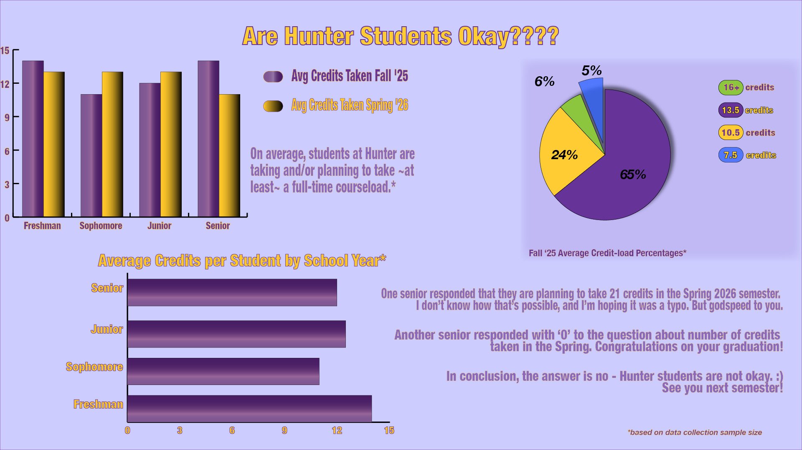

I decided to poll people on their majors, their current year, the number of credits they are taking this semester, and the number of credits they will be taking in the Spring. I collected the data in ranges, so I used the averages of the dataset instead. I included the average number of credits taken per school year, average number of credits taken in both the Fall and upcoming Spring semester, as well as some average credit-load percentages overall. Initially, I didn't realize the extent of the data visualization project, and had resolved to just making a few bar graphs. But once I understood the full scope of the assignment, I had a lot more fun manipulating appearances, properties and layers to get the styles I wanted. I'm looking forward to using this skill in other applications. I could see myself making my own infographic on listening analytics for myself and other artists.
